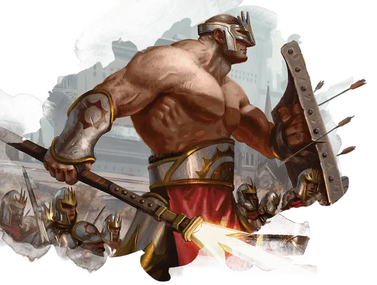

Великан-хранитель
Guardian Giant
Огромный Великан, законно-нейтральный

Класс Доспеха 19 (полулаты, щит)
Хиты 137 (11к12 + 66)
Скорость 40 футов
| мод | спас | ||
|---|---|---|---|
| СИЛ | 24 | +7 | +7 |
| ЛОВ | 17 | +3 | +6 |
| ТЕЛ | 22 | +6 | +6 |
| мод | спас | ||
|---|---|---|---|
| ИНТ | 10 | +0 | +0 |
| МДР | 18 | +4 | +7 |
| ХАР | 12 | +1 | +1 |
Навыки Восприятие +10, Проницательность +7
Чувства пассивное Восприятие 20
Языки Общий, Великаний
Опасность 8 (3900 опыта)
Бонус мастерства +3
Особенности
Бдительный. Великана невозможно застать врасплох.
Действия
Мультиатака. Великан совершает три атаки Копьем.
Копьё. . Дальнобойная или рукопашная атака оружием: +10 к попаданию, досягаемость 10 фт. или дистанция 60/240 фт., одна цель. Попадание: 17 (3к6 + 7) колющего урона или 20 (3к8 + 7) колющего урона, если используется двумя руками для рукопашной атаки.
Реакции
Защита. Когда нападающий, которого видит великан, совершает бросок атаки против существа в пределах 10 футов от великана, великан может наложить помеху на эту атаку.
Описание
Большинство великанов в Легионе Борос происходят из одного клана, Скорскала, который долгое время враждовал с кланами Груулов. Эти гиганты являются охранниками и привратниками, широко представленными в Солнечной Страже, а также мощными мускулами, поддерживающими миссии Боросов.
Великанам клана Скорскал часто поручают защищать гарнизоны и форты Боросов по всей Равнике. Они отличные стражи, зоркие и бдительные, и служат живой стеной для защиты мелких солдат, сражающихся вместе с ними. Скорскальские гиганты очень похожи на огромных людей с огромными мышцами и сравнительно маленькими головами.
Великаны
Великаны используют свои огромные размеры и силу, чтобы продвигать дело не менее чем четырех гильдий. В Легионе Боросов и Синдикате Орзов они хитрые солдаты. Великаны Культа Ракдоса и Кланов Груулов не менее эффективны, но им не хватает дисциплины.